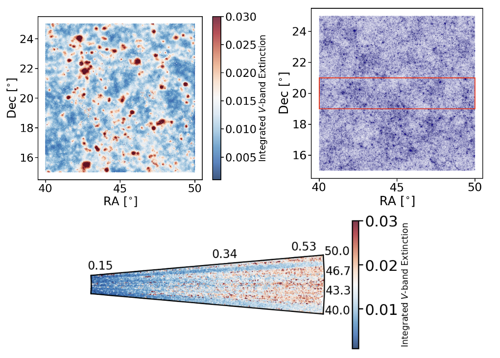
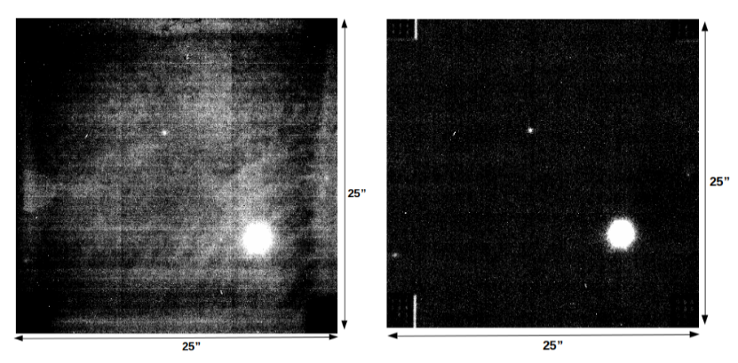

About Me
Hello! I'm Eray, an astrophysicist originally from Istanbul, Türkiye. I moved to Germany in 2016, driven by a long-term passion for space exploration. After completing an intensive German language course, I began my BSc in Physics at Heidelberg University. There, I had the opportunity to work on the reduction and analysis of near-infrared imaging data of radio galaxy hosts at the Landessternwarte.
I continued with an MSc in Astrophysics at the University of Bonn, where I worked under the supervision of Prof. Dr. Peter Schneider at the Argelander-Institut für Astronomie. This experience not only introduced me to gravitational lensing and cosmology but also gave me my first taste of teaching.
I’m currently pursuing my PhD at the German Centre for Cosmological Lensing in Bochum. Supervised by Dr. Angus H. Wright and Prof. Dr. Hendrik Hildebrandt, I focus on measuring circumgalactic dust extinction using data from the Kilo-Degree Survey (KiDS).
My research centers on developing custom pipelines for complex, noisy, multi-wavelength datasets. I specialize in extracting weak astrophysical signals, modelling observational systematics, and evaluating trade-offs between resolution, coverage, and precision to support space science missions. I’m especially drawn to interdisciplinary data challenges and hope to contribute to future exploration efforts with both scientific mindset and technical expertise.
Outside of academia, I’m actively involved in outreach and community engagement. I’m a member of the young German Physical Society (jDPG) and currently serve as the social media manager for the Collaborative Research Centre 1491 (SFB1491). I’m also a certified scuba diver, captivated by marine life from Egypt to Japan, and enjoy expressing myself through watercolour painting.
Feel free to get in touch!
Research Interests
- Development of pipelines to mitigate instrumental systematics.
- Signal extraction in noisy, multi-wavelength data.
- Bayesian inference & cross-correlation techniques.
- Scalable, reproducible workflows for science operations.
- Responsive methods for subsurface feature detection via radargrams.
Projects
Simulation of Circumgalactic Dust Extinction in MICE2
I developed a custom Python pipeline to simulate the impact of circumgalactic dust extinction on source galaxy magnitudes using the MICE2 cosmological simulation. The method uses a KDTree structure to efficiently identify nearest neighbours: for each "source" galaxy, the pipeline computes and sums the dust extinction contributions from nearby "lens" galaxies' halos. The extinction profile is based on observational results from Ménard et al. (2010), as recommended by García-Fernández et al. (2018), and scaled using dust-to-stellar mass ratios from Triani et al. (2020). This modular pipeline can be applied to any cosmological galaxy catalogue to modify magnitudes at arbitrary wavelengths due to circumgalactic dust. The code is available in my cgm-dust-extinction repository.
Detection Bias in Cosmic Shear
I constrained a pipeline to study detection bias in galaxy surveys by simulating how the presence of nearby bright objects affects the detectability of faint sources. Using GalSim, we generate realistic galaxies and inject them into real observational data from the Kilo-Degree Survey. We then use Source Extractor to assess which galaxies are detected and under what conditions they are missed. By analyzing these detection outcomes, we derived a fitting function for the detection probability as a function of angular separation and flux ratio with neighbouring galaxies. This function captures how high-density regions, often associated with larger lensing signals, are more prone to detection losses.
The pipeline includes tools to assign weights to galaxies based on this detection probability, which can then be incorporated into measurements to correct for the resulting bias. While originally developed in the context of cosmic shear surveys, this approach is broadly applicable to any study relying on accurate galaxy number counts or shape measurements in crowded fields. The full code is publicly available in my detection-bias repository.
Near-IR Imaging of Radio Galaxy Hosts
I conducted the reduction and analysis of near-infrared imaging data of six radio galaxy hosts observed with the LUCI1 and LUCI2 instruments on the Large Binocular Telescope (LBT). These instruments use HAWAII-2RG (H2RG) detectors, which required a dedicated non-linearity correction to accurately translate incoming photons into electronic signal.
The custom reduction pipeline involved several key steps using IRAF. First, bad pixels were removed using instrument-specific masks. Then, flatfield corrections were applied to address pixel-to-pixel sensitivity variations, ensuring uniform illumination. The most critical step was sky subtraction, which required different strategies depending on redshift. For low-redshift galaxies, master sky frames were created from provided sky exposures. For high-redshift targets without dedicated sky frames, a rolling-median approach was implemented to construct sky estimates directly from science frames. This adaptive technique accounted for spatial and temporal sky variability, which is especially prominent in near-IR observations. Bright stars were also masked to prevent contamination.
Following reduction, I performed photometric measurements on all galaxies using IRAF, and for the low-redshift sample, I conducted two-dimensional morphological modeling using GALFIT. This project provided valuable hands-on experience in the full near-IR data reduction chain, from raw frames to scientific measurements.
Invited Talks
- `Exploring dust transport in the dark matter halos across stellar mass bins with weak-lensing surveys', General Assembly of SFB1491, Dortmund, Germany, February 2025
- `Cosmology with large-scale surveys', General Assembly of SFB1491, Bochum, Germany, June 2024
- `Exploring dust transport in dark matter halos of galaxies using weak-lensing surveys', Aspen Center for Physics, Aspen, USA, March 2024
- `Measurement of circumgalactic dust extinction on KiDS-DR4', General Assembly of SFB1491, Dortmund, Germany, November 2023
Beyond Research
Outside of astrophysics, I’m passionate about exploring both the deep sea and artistic expression. I’m a certified scuba diver, and I’ve had the chance to dive in breathtaking underwater landscapes from the Red Sea in Egypt to the Pacific coasts of Japan. I also enjoy painting with watercolours — a relaxing way for me to capture moods and moments beyond the realm of data and research. These hobbies keep me grounded and creatively inspired in my scientific journey.
Contact
Email: egenc@astro.rub.de